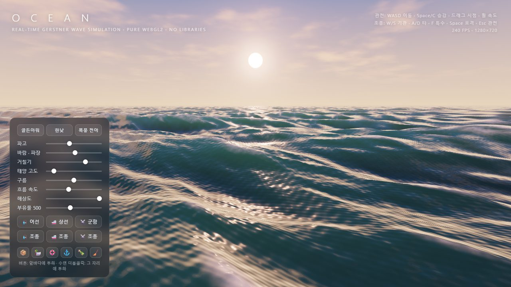
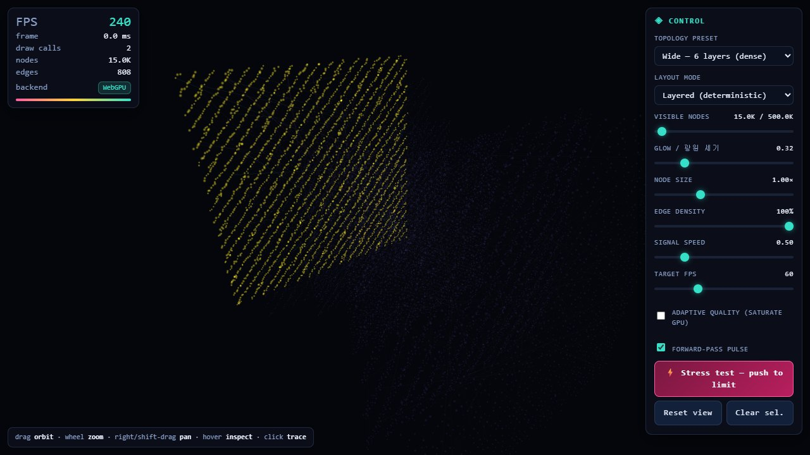
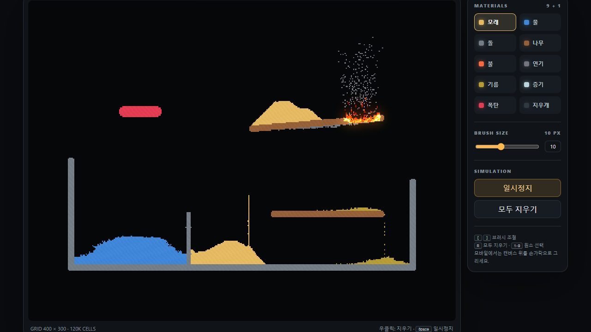
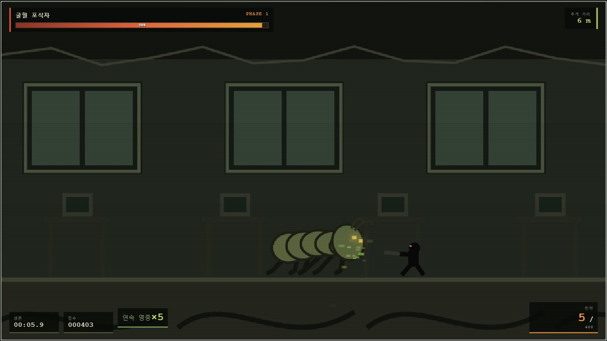
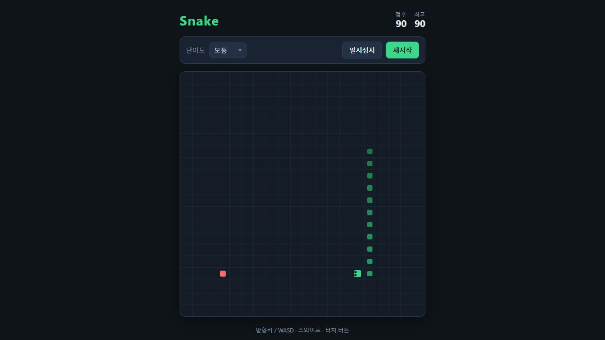
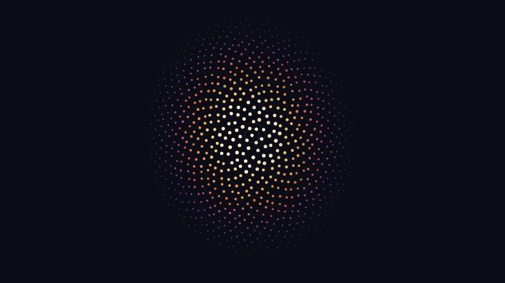

오션 — 실시간 파도 OCEAN
게르스트너 파도 바다를 날아다니고 배를 조종하는 WebGL2 시뮬레이션
📱 왼쪽 스틱 비행 · 드래그 시점 · 핀치 속도 · 🌊 바다 설정⌨ WASD 이동 · 드래그 시점 · 휠 속도 · 조종 중 W/S·A/D
인터랙티브

신경망 시각화 Neural Net Visualizer
수십만 노드 신경망과 신호 흐름을 WebGPU/WebGL2로 그리는 3D 시각화
📱 한 손가락 회전 · 핀치 줌 · 노드 탭 = 경로 추적⌨ 드래그 회전 · 휠 줌 · 클릭 경로 추적
인터랙티브

엘리먼트 랩 ELEMENT LAB
모래·물·불·기름·폭탄 입자를 그려 섞고 태우는 12만 셀 샌드박스
📱 손가락으로 문질러 그리기 · 재료·지우개 버튼⌨ 클릭·드래그로 그리기 · 우클릭 지우기 · 1–9 재료
인터랙티브

잔향 통로 Echo Corridor
거대 동굴벌레에게 쫓기며 달리고 뒤돌아 쏘는 횡스크롤 생존 액션
📱 왼쪽 스틱 이동 · 오른쪽 스틱 조준·발사 · 점프·재장전 버튼⌨ A/D 이동 · Space 점프 · 마우스 조준 · 좌클릭 발사
게임가로 ⟲

스네이크 Snake
난이도 3단계와 최고 점수 저장을 갖춘 깔끔한 스네이크
📱 보드 스와이프 또는 방향 버튼⌨ 방향키/WASD · Space 일시정지
게임

잠재 공간 속 Claude의 자화상 Self-portrait of Claude
따뜻한 중심에서 차가운 가장자리로 흩어지는 점으로 그린 자화상
📱 보기 전용⌨ 보기 전용
아트